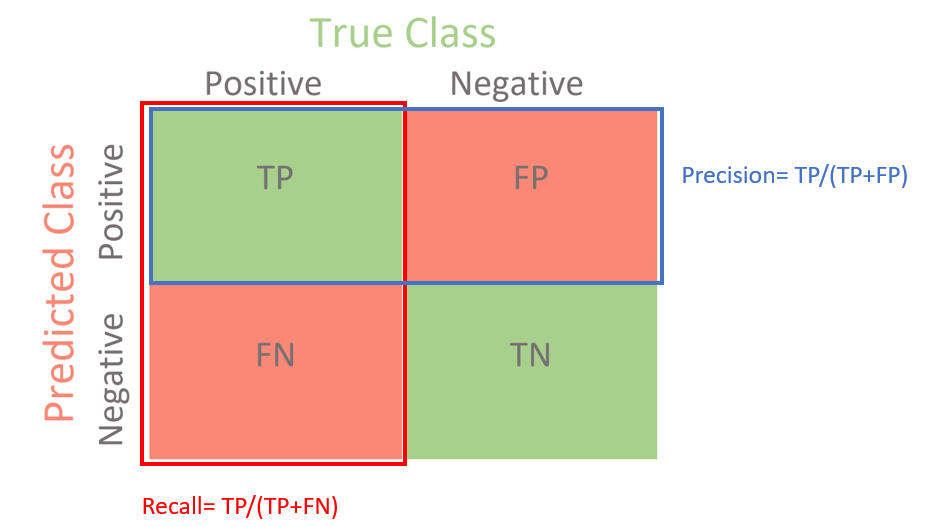

Code
import pandas as pd
import numpy as np
from scipy import stats
import matplotlib.pyplot as plt
import seaborn as sns
import datetimehttps://www.kaggle.com/code/kabure/extensive-eda-and-modeling-xgb-hyperopt
This data analytics project revolves around enhancing fraud detection in online financial transactions, a critical business use case vital for both consumers and businesses. The significance lies in the escalating threat of fraudulent activities within e-commerce, leading to substantial financial losses for businesses and potential security risks for consumers.
Our primary focus is to leverage a comprehensive dataset sourced from Vesta Corporation, a leading payment service company, to develop and refine machine learning models aimed at accurately distinguishing between legitimate and fraudulent transactions.
The original evaluation metric for this Kaggle competition is ROC AUC; however, due to the imbalance data problem (shown in isFruad section), I think it’s better to use Precision-Recall Curve AUC as the evaluation metric. Let’s talk about why.

|

|
ROC curve uses True Positive Rate (TPR) and True Negative Rate (TNR) as y-axis and x-axis.
TPR indicates the model’s ability to distinguish postive data; TNR indicates the model’s ability to distinguish negative data. Thus, ROC curve shows the overall ability to distinguish postive and negative classes.
However, in imbalance dataset with small amount of TP, TNR is not what we care about.

|
 |
Precision-Recall curve uses Precision and Recall as y-axis and x-axis.
Recall indicates the model’s ability to distinguish postive data; Precision indicates how many of the predicted positive cases are actually positive. Thus, Precision-Recall curve shows the overall ability to find as many as positive cases and also with a precise prediction.
Given our imbalanced dataset with a small number of TP and considering the real-world scenario of monitoring fraudulent transactions, utilizing the Precision-Recall curve would be prudent as it specifically emphasizes TP.
import pandas as pd
import numpy as np
from scipy import stats
import matplotlib.pyplot as plt
import seaborn as sns
import datetime#for modeling
from sklearn.linear_model import LogisticRegression
from sklearn.metrics import precision_recall_curve, f1_score
from sklearn.preprocessing import OneHotEncoder, StandardScaler
from sklearn.compose import ColumnTransformer
from sklearn.pipeline import Pipelineimport warnings
# Ignore all warnings
warnings.filterwarnings("ignore")# Function to reduce the DF size
def reduce_mem_usage(df, verbose=True):
numerics = ['int16', 'int32', 'int64', 'float16', 'float32', 'float64']
start_mem = df.memory_usage().sum() / 1024**2
for col in df.columns:
col_type = df[col].dtypes
if col_type in numerics:
c_min = df[col].min()
c_max = df[col].max()
if str(col_type)[:3] == 'int':
if c_min > np.iinfo(np.int8).min and c_max < np.iinfo(np.int8).max:
df[col] = df[col].astype(np.int8)
elif c_min > np.iinfo(np.int16).min and c_max < np.iinfo(np.int16).max:
df[col] = df[col].astype(np.int16)
elif c_min > np.iinfo(np.int32).min and c_max < np.iinfo(np.int32).max:
df[col] = df[col].astype(np.int32)
elif c_min > np.iinfo(np.int64).min and c_max < np.iinfo(np.int64).max:
df[col] = df[col].astype(np.int64)
else:
if c_min > np.finfo(np.float16).min and c_max < np.finfo(np.float16).max:
df[col] = df[col].astype(np.float16)
elif c_min > np.finfo(np.float32).min and c_max < np.finfo(np.float32).max:
df[col] = df[col].astype(np.float32)
else:
df[col] = df[col].astype(np.float64)
end_mem = df.memory_usage().sum() / 1024**2
if verbose: print('Mem. usage decreased to {:5.2f} Mb ({:.1f}% reduction)'.format(end_mem, 100 * (start_mem - end_mem) / start_mem))
return df
#summary of the dataframe
def resumetable(df, columns):
print(f"Dataset Shape: {df.shape}")
summary = pd.DataFrame(df[columns].dtypes, columns=['dtypes'])
summary = summary.reset_index()
summary['Name'] = summary['index']
summary = summary[['Name', 'dtypes']]
summary['Missing'] = df[columns].isnull().sum().values
summary['Uniques'] = df[columns].nunique().values
summary['First Value'] = df[columns].iloc[0].values
summary['Second Value'] = df[columns].iloc[1].values
summary['Third Value'] = df[columns].iloc[2].values
return summary
#plot two charts to perform in-depth analysis on different categorical columns
#The top section (subplot 1) presents a count plot, illustrating the frequency of occurrences for each category and the corresponding percentage of fraudulent transactions. The bottom section (subplot 2) offers a bar plot depicting the total transaction amounts across different categories, coupled with the percentage of fraudulent transaction amounts.
def ploting_cnt_amt(df, col, lim=2000):
tmp = pd.crosstab(df[col], df['isFraud'], normalize='index') * 100
tmp = tmp.reset_index()
tmp.rename(columns={0:'NoFraud', 1:'Fraud'}, inplace=True)
plt.figure(figsize=(16,14))
plt.suptitle(f'{col} Distributions ', fontsize=24)
plt.subplot(211)
g = sns.countplot( x=col, data=df, order=list(tmp[col].values))
gt = g.twinx()
gt = sns.pointplot(x=col, y='Fraud', data=tmp, order=list(tmp[col].values),
color='black')
gt.set_ylim(0,tmp['Fraud'].max()*1.1)
gt.set_ylabel("% Fraud Transactions", fontsize=16)
g.set_title(f"Count of {col} values and % Fraud Transactions", fontsize=20)
g.set_xlabel(f"{col} Category Names", fontsize=16)
g.set_ylabel(f"Count of {col}", fontsize=17)
g.set_xticklabels(g.get_xticklabels(),rotation=45)
sizes = []
for p in g.patches:
height = p.get_height()
sizes.append(height)
g.text(p.get_x()+p.get_width()/2.,
height + 3,
'{:1.2f}%'.format(height/total*100),
ha="center",fontsize=12)
g.set_ylim(0,max(sizes)*1.15)
#########################################################################
perc_amt = (df.groupby(['isFraud',col])['TransactionAmt'].sum() \
/ df.groupby([col])['TransactionAmt'].sum() * 100).unstack('isFraud')
perc_amt = perc_amt.reset_index()
perc_amt.rename(columns={0:'NoFraud', 1:'Fraud'}, inplace=True)
amt = df.groupby([col])['TransactionAmt'].sum().reset_index()
perc_amt = perc_amt.fillna(0)
plt.subplot(212)
g1 = sns.barplot(x=col, y='TransactionAmt',
data=amt,
order=list(tmp[col].values))
g1t = g1.twinx()
g1t = sns.pointplot(x=col, y='Fraud', data=perc_amt,
order=list(tmp[col].values),
color='black')
g1t.set_ylim(0,perc_amt['Fraud'].max()*1.1)
g1t.set_ylabel("% Fraud Total Amount", fontsize=16)
g.set_xticklabels(g.get_xticklabels(),rotation=45)
g1.set_title(f"Transaction Amount by {col} + % Fraud Transactions Amount", fontsize=20)
g1.set_xlabel(f"{col} Category Names", fontsize=16)
g1.set_ylabel("Transaction Amount (US$)", fontsize=16)
g1.set_xticklabels(g.get_xticklabels(),rotation=45)
for p in g1.patches:
height = p.get_height()
g1.text(p.get_x()+p.get_width()/2.,
height + 3,
'{:1.2f}%'.format(height/total_amt*100),
ha="center",fontsize=12)
plt.subplots_adjust(hspace=.4, top = 0.9)
plt.show()
# calculate missing value percentage for a column
def calculate_missing_percentage(df, column_name):
missing_values = df[column_name].isnull().sum()
total_rows = df.shape[0]
missing_pct = round(missing_values / total_rows * 100, 2)
print(f"Missing value percentage for {column_name}: {missing_pct}%")transaction = pd.read_csv('data/train_transaction.csv')
identity = pd.read_csv('data/train_identity.csv')transaction_cols = list(transaction.columns)
print(transaction_cols)['TransactionID', 'isFraud', 'TransactionDT', 'TransactionAmt', 'ProductCD', 'card1', 'card2', 'card3', 'card4', 'card5', 'card6', 'addr1', 'addr2', 'dist1', 'dist2', 'P_emaildomain', 'R_emaildomain', 'C1', 'C2', 'C3', 'C4', 'C5', 'C6', 'C7', 'C8', 'C9', 'C10', 'C11', 'C12', 'C13', 'C14', 'D1', 'D2', 'D3', 'D4', 'D5', 'D6', 'D7', 'D8', 'D9', 'D10', 'D11', 'D12', 'D13', 'D14', 'D15', 'M1', 'M2', 'M3', 'M4', 'M5', 'M6', 'M7', 'M8', 'M9', 'V1', 'V2', 'V3', 'V4', 'V5', 'V6', 'V7', 'V8', 'V9', 'V10', 'V11', 'V12', 'V13', 'V14', 'V15', 'V16', 'V17', 'V18', 'V19', 'V20', 'V21', 'V22', 'V23', 'V24', 'V25', 'V26', 'V27', 'V28', 'V29', 'V30', 'V31', 'V32', 'V33', 'V34', 'V35', 'V36', 'V37', 'V38', 'V39', 'V40', 'V41', 'V42', 'V43', 'V44', 'V45', 'V46', 'V47', 'V48', 'V49', 'V50', 'V51', 'V52', 'V53', 'V54', 'V55', 'V56', 'V57', 'V58', 'V59', 'V60', 'V61', 'V62', 'V63', 'V64', 'V65', 'V66', 'V67', 'V68', 'V69', 'V70', 'V71', 'V72', 'V73', 'V74', 'V75', 'V76', 'V77', 'V78', 'V79', 'V80', 'V81', 'V82', 'V83', 'V84', 'V85', 'V86', 'V87', 'V88', 'V89', 'V90', 'V91', 'V92', 'V93', 'V94', 'V95', 'V96', 'V97', 'V98', 'V99', 'V100', 'V101', 'V102', 'V103', 'V104', 'V105', 'V106', 'V107', 'V108', 'V109', 'V110', 'V111', 'V112', 'V113', 'V114', 'V115', 'V116', 'V117', 'V118', 'V119', 'V120', 'V121', 'V122', 'V123', 'V124', 'V125', 'V126', 'V127', 'V128', 'V129', 'V130', 'V131', 'V132', 'V133', 'V134', 'V135', 'V136', 'V137', 'V138', 'V139', 'V140', 'V141', 'V142', 'V143', 'V144', 'V145', 'V146', 'V147', 'V148', 'V149', 'V150', 'V151', 'V152', 'V153', 'V154', 'V155', 'V156', 'V157', 'V158', 'V159', 'V160', 'V161', 'V162', 'V163', 'V164', 'V165', 'V166', 'V167', 'V168', 'V169', 'V170', 'V171', 'V172', 'V173', 'V174', 'V175', 'V176', 'V177', 'V178', 'V179', 'V180', 'V181', 'V182', 'V183', 'V184', 'V185', 'V186', 'V187', 'V188', 'V189', 'V190', 'V191', 'V192', 'V193', 'V194', 'V195', 'V196', 'V197', 'V198', 'V199', 'V200', 'V201', 'V202', 'V203', 'V204', 'V205', 'V206', 'V207', 'V208', 'V209', 'V210', 'V211', 'V212', 'V213', 'V214', 'V215', 'V216', 'V217', 'V218', 'V219', 'V220', 'V221', 'V222', 'V223', 'V224', 'V225', 'V226', 'V227', 'V228', 'V229', 'V230', 'V231', 'V232', 'V233', 'V234', 'V235', 'V236', 'V237', 'V238', 'V239', 'V240', 'V241', 'V242', 'V243', 'V244', 'V245', 'V246', 'V247', 'V248', 'V249', 'V250', 'V251', 'V252', 'V253', 'V254', 'V255', 'V256', 'V257', 'V258', 'V259', 'V260', 'V261', 'V262', 'V263', 'V264', 'V265', 'V266', 'V267', 'V268', 'V269', 'V270', 'V271', 'V272', 'V273', 'V274', 'V275', 'V276', 'V277', 'V278', 'V279', 'V280', 'V281', 'V282', 'V283', 'V284', 'V285', 'V286', 'V287', 'V288', 'V289', 'V290', 'V291', 'V292', 'V293', 'V294', 'V295', 'V296', 'V297', 'V298', 'V299', 'V300', 'V301', 'V302', 'V303', 'V304', 'V305', 'V306', 'V307', 'V308', 'V309', 'V310', 'V311', 'V312', 'V313', 'V314', 'V315', 'V316', 'V317', 'V318', 'V319', 'V320', 'V321', 'V322', 'V323', 'V324', 'V325', 'V326', 'V327', 'V328', 'V329', 'V330', 'V331', 'V332', 'V333', 'V334', 'V335', 'V336', 'V337', 'V338', 'V339']Transaction columns description:
identity_cols = list(identity.columns)
print(identity_cols)['TransactionID', 'id_01', 'id_02', 'id_03', 'id_04', 'id_05', 'id_06', 'id_07', 'id_08', 'id_09', 'id_10', 'id_11', 'id_12', 'id_13', 'id_14', 'id_15', 'id_16', 'id_17', 'id_18', 'id_19', 'id_20', 'id_21', 'id_22', 'id_23', 'id_24', 'id_25', 'id_26', 'id_27', 'id_28', 'id_29', 'id_30', 'id_31', 'id_32', 'id_33', 'id_34', 'id_35', 'id_36', 'id_37', 'id_38', 'DeviceType', 'DeviceInfo']Identity columns description:
Numerous columns, including C1-C14, D1-D15, M1-M9, Vxxx, and id, obscure their true meanings. To derive meaningful business conclusions and recommendations, my focus will be on those explainable columns.
## REducing memory
df_trans = reduce_mem_usage(transaction)
df_id = reduce_mem_usage(identity)Mem. usage decreased to 542.35 Mb (69.4% reduction)
Mem. usage decreased to 25.86 Mb (42.7% reduction)resumetable(df_trans, df_trans.columns.tolist())[:10]Dataset Shape: (590540, 394)| Name | dtypes | Missing | Uniques | First Value | Second Value | Third Value | |
|---|---|---|---|---|---|---|---|
| 0 | TransactionID | int32 | 0 | 590540 | 2987000 | 2987001 | 2987002 |
| 1 | isFraud | int8 | 0 | 2 | 0 | 0 | 0 |
| 2 | TransactionDT | int32 | 0 | 573349 | 86400 | 86401 | 86469 |
| 3 | TransactionAmt | float16 | 0 | 8195 | 68.5 | 29.0 | 59.0 |
| 4 | ProductCD | object | 0 | 5 | W | W | W |
| 5 | card1 | int16 | 0 | 13553 | 13926 | 2755 | 4663 |
| 6 | card2 | float16 | 8933 | 500 | NaN | 404.0 | 490.0 |
| 7 | card3 | float16 | 1565 | 114 | 150.0 | 150.0 | 150.0 |
| 8 | card4 | object | 1577 | 4 | discover | mastercard | visa |
| 9 | card5 | float16 | 4259 | 119 | 142.0 | 102.0 | 166.0 |
TransactionID has 590540 unique values, which is the same as df_trans’s rows, so that we can confirm TransactionID is a valid primary key.
The fraudulent transactions, both in count and total amount, represent only a small portion of the overall transactions. This suggests an imbalance in the data, which is an issue we should consider when building models.
df_trans['TransactionAmt'] = df_trans['TransactionAmt'].astype(float)
total = len(df_trans)
total_amt = df_trans.groupby(['isFraud'])['TransactionAmt'].sum().sum()
plt.figure(figsize=(16,6))
plt.subplot(121)
g = sns.countplot(x='isFraud', data=df_trans, )
g.set_title("Count of Transaction", fontsize=22)
g.set_xlabel("Is fraud?", fontsize=18)
g.set_ylabel('Count', fontsize=18)
for p in g.patches:
height = p.get_height()
g.text(p.get_x()+p.get_width()/2.,
height,
'{:1.2f}%'.format(height/total*100),
ha="center", fontsize=15)
perc_amt = (df_trans.groupby(['isFraud'])['TransactionAmt'].sum())
perc_amt = perc_amt.reset_index()
plt.subplot(122)
g1 = sns.barplot(x='isFraud', y='TransactionAmt', dodge=True, data=perc_amt)
g1.set_title("Transaction Amount", fontsize=22)
g1.set_xlabel("Is fraud?", fontsize=18)
g1.set_ylabel('Total Transaction Amount Scalar', fontsize=18)
for p in g1.patches:
height = p.get_height()
g1.text(p.get_x()+p.get_width()/2.,
height + 3,
'{:1.2f}%'.format(height/total_amt * 100),
ha="center", fontsize=15)
plt.show()resumetable(df_trans, ["TransactionDT"])Dataset Shape: (590540, 394)| Name | dtypes | Missing | Uniques | First Value | Second Value | Third Value | |
|---|---|---|---|---|---|---|---|
| 0 | TransactionDT | int32 | 0 | 573349 | 86400 | 86401 | 86469 |
Looking at the first, second and third value, it appears that the TransactionDT is structured in a format resembling a time delta measured in seconds. Let’s delve deeper into this for further exploration.
TransactionDT_min = df_trans['TransactionDT'].min()
TransactionDT_max = df_trans['TransactionDT'].max()
convert_to_days = 24*60*60
TransactionDT_range = (TransactionDT_max-TransactionDT_min)/convert_to_days
print(f"Min TransactionDT:{TransactionDT_min}; Max TransactionDT:{TransactionDT_max}")
print(f"TransactionDT Range (days):{TransactionDT_range}")
print("The range of TransactionDT is about half a year.")Min TransactionDT:86400; Max TransactionDT:15811131
TransactionDT Range (days):181.99920138888888
The range of TransactionDT is about half a year.START_DATE = '2017-12-01'
startdate = datetime.datetime.strptime(START_DATE, "%Y-%m-%d")
df_trans["Date"] = df_trans['TransactionDT'].apply(lambda x: (startdate + datetime.timedelta(seconds=x)))
df_trans['_Weekdays'] = df_trans['Date'].dt.dayofweek
df_trans['_Hours'] = df_trans['Date'].dt.hour
df_trans['_Days'] = df_trans['Date'].dt.day
min_date, max_date = df_trans["Date"].min(), df_trans["Date"].max()
print(f"Min Date: {min_date}, Max Date: {max_date}")Min Date: 2017-12-02 00:00:00, Max Date: 2018-06-01 23:58:51plt.figure(figsize=(16, 6))
# Create subplots with shared y-axis
ax1 = plt.subplot(131)
ax1.plot(df_trans.groupby('_Days').mean()['isFraud'])
ax1.set_xlabel('Day of Month')
ax1.set_ylabel('Fraction of fraudulent transactions')
ax2 = plt.subplot(132, sharey=ax1)
ax2.plot(df_trans.groupby('_Weekdays').mean()['isFraud'])
ax2.set_xlabel('Day of week')
ax2.set_ylabel('Fraction of fraudulent transactions')
ax2 = plt.subplot(133, sharey=ax1) # Share y-axis with ax1
ax2.plot(df_trans.groupby('_Hours').mean()['isFraud'])
ax2.set_xlabel('Hour')
ax2.set_ylabel('Fraction of fraudulent transactions')
plt.suptitle("Fraudulent Transactions Distribution by Day of Month/ Day of week/ Hour")
plt.tight_layout()
plt.show()
It appears that fraudulent transactions are more closely associated with the hour of the day rather than the day of the week. We can consider this as one of the feature for our model.
df_trans['TransactionAmt'].plot(kind='hist',
bins=100,
figsize=(15, 5),
title='Distribution of Transaction Amt')
plt.show()
The distribution of TransactionAmt is quite skewwed, so let’s convert it with log transformation
df_trans['TransactionAmt'] \
.apply(np.log) \
.plot(kind='hist',
bins=100,
figsize=(15, 5),
title='Distribution of Log Transaction Amt')
plt.show()
color_pal = [x['color'] for x in plt.rcParams['axes.prop_cycle']]
fig, ((ax1, ax2), (ax3, ax4)) = plt.subplots(2, 2, figsize=(15, 6))
df_trans.loc[df_trans['isFraud'] == 1] \
['TransactionAmt'].apply(np.log) \
.plot(kind='hist',
bins=100,
title='Log Transaction Amt - Fraud',
color=color_pal[1],
xlim=(-3, 10),
ax= ax1)
df_trans.loc[df_trans['isFraud'] == 0] \
['TransactionAmt'].apply(np.log) \
.plot(kind='hist',
bins=100,
title='Log Transaction Amt - Not Fraud',
color=color_pal[2],
xlim=(-3, 10),
ax=ax2)
df_trans.loc[df_trans['isFraud'] == 1] \
['TransactionAmt'] \
.plot(kind='hist',
bins=100,
title='Transaction Amt - Fraud',
color=color_pal[1],
ax= ax3)
df_trans.loc[df_trans['isFraud'] == 0] \
['TransactionAmt'] \
.plot(kind='hist',
bins=100,
title='Transaction Amt - Not Fraud',
color=color_pal[2],
ax=ax4)
plt.show()
# Apply log transformation to transaction amounts
df_trans['Log_TransactionAmt'] = np.log(df_trans['TransactionAmt'] + 1) # Adding 1 to avoid log(0)
plt.figure(figsize=(8, 6))
sns.boxplot(x='isFraud', y='Log_TransactionAmt', data=df_trans)
plt.title('Log Transaction Amount Distribution - Not Fraud vs Fraud')
plt.xlabel('Fraud Status')
plt.ylabel('Log Transaction Amount')
plt.show()
ploting_cnt_amt(df_trans, '_Hours')
When initially analyzing TransactionDT in the previous section, we observed variations in the fraud rate across different hours. Subsequently, examining the two charts above, we identify that the fraud rate occurs between 4 am to 11 am, characterized by fewer transactions and lower transaction amounts. A plausible business hypothesis could suggest that these types of fraud might originate overseas, potentially in different time zones from the local time.
resumetable(df_trans, ['ProductCD'])Dataset Shape: (590540, 399)| Name | dtypes | Missing | Uniques | First Value | Second Value | Third Value | |
|---|---|---|---|---|---|---|---|
| 0 | ProductCD | object | 0 | 5 | W | W | W |
ploting_cnt_amt(df_trans, 'ProductCD')resumetable(df_trans, ['card1', 'card2', 'card3','card4', 'card5', 'card6'])Dataset Shape: (590540, 399)| Name | dtypes | Missing | Uniques | First Value | Second Value | Third Value | |
|---|---|---|---|---|---|---|---|
| 0 | card1 | int16 | 0 | 13553 | 13926 | 2755 | 4663 |
| 1 | card2 | float16 | 8933 | 500 | NaN | 404.0 | 490.0 |
| 2 | card3 | float16 | 1565 | 114 | 150.0 | 150.0 | 150.0 |
| 3 | card4 | object | 1577 | 4 | discover | mastercard | visa |
| 4 | card5 | float16 | 4259 | 119 | 142.0 | 102.0 | 166.0 |
| 5 | card6 | object | 1571 | 4 | credit | credit | debit |
Out of the provided variables, four are numeric, and two are categorical. As the dataset lacks explicit definitions for the numeric variables, let’s concentrate on the categorical ones, which we can infer likely represent the card issuer company and card type.
calculate_missing_percentage(df_trans, 'card4')
df_trans.card4 = df_trans.card4.fillna('NAN')Missing value percentage for card4: 0.27%ploting_cnt_amt(df_trans, 'card4')
calculate_missing_percentage(df_trans, 'card6')
df_trans.card6 = df_trans.card6.fillna('NAN')Missing value percentage for card6: 0.27%ploting_cnt_amt(df_trans, 'card6')
resumetable(df_trans, ['addr1', 'addr2'])Dataset Shape: (590540, 399)| Name | dtypes | Missing | Uniques | First Value | Second Value | Third Value | |
|---|---|---|---|---|---|---|---|
| 0 | addr1 | float16 | 65706 | 332 | 315.0 | 325.0 | 330.0 |
| 1 | addr2 | float16 | 65706 | 74 | 87.0 | 87.0 | 87.0 |
addr1 and addr2 should be categorical, so let’s transform them first.
df_trans['addr1'] = df_trans['addr1'].astype('object')
df_trans['addr2'] = df_trans['addr2'].astype('object')
resumetable(df_trans, ['addr1', 'addr2'])Dataset Shape: (590540, 399)| Name | dtypes | Missing | Uniques | First Value | Second Value | Third Value | |
|---|---|---|---|---|---|---|---|
| 0 | addr1 | object | 65706 | 332 | 315.0 | 325.0 | 330.0 |
| 1 | addr2 | object | 65706 | 74 | 87.0 | 87.0 | 87.0 |
calculate_missing_percentage(df_trans, 'addr1')
calculate_missing_percentage(df_trans, 'addr2')Missing value percentage for addr1: 11.13%
Missing value percentage for addr2: 11.13%Let’s fill missing values with “NAN”
df_trans.addr1 = df_trans.addr1.fillna('NAN')
df_trans.addr2 = df_trans.addr2.fillna('NAN')result = df_trans.groupby(['addr1'])['addr1'].count().sort_values(ascending=False)
total_count = result.sum()
result_percentage = (result / total_count) * 100
result_percentageaddr1
NAN 11.126427
299.0 7.846209
325.0 7.239306
204.0 7.115521
264.0 6.751448
...
425.0 0.000169
227.0 0.000169
232.0 0.000169
417.0 0.000169
427.0 0.000169
Name: addr1, Length: 333, dtype: float64There are 332 unique values, let’s focus on addr1 that appears more than 1%
indices = result_percentage[result_percentage > 1].index
selected_rows = df_trans.loc[df_trans.addr1.isin(indices)]
ploting_cnt_amt(selected_rows, 'addr1')
result = df_trans.groupby(['addr2'])['addr2'].count().sort_values(ascending=False)
total_count = result.sum()
result_percentage = (result / total_count) * 100
result_percentageaddr2
87.0 88.136451
NAN 11.126427
60.0 0.522234
96.0 0.108037
32.0 0.015410
...
22.0 0.000169
25.0 0.000169
50.0 0.000169
49.0 0.000169
55.0 0.000169
Name: addr2, Length: 75, dtype: float64Almost all addr2 is 87, which indicates that this may not be a meaningful variable.
resumetable(df_trans, ['P_emaildomain'])Dataset Shape: (590540, 399)| Name | dtypes | Missing | Uniques | First Value | Second Value | Third Value | |
|---|---|---|---|---|---|---|---|
| 0 | P_emaildomain | object | 94456 | 59 | NaN | gmail.com | outlook.com |
calculate_missing_percentage(df_trans, 'P_emaildomain')
df_trans.P_emaildomain = df_trans.P_emaildomain.fillna('NAN')Missing value percentage for P_emaildomain: 15.99%Let’s first rename similar domains to a same group of domain.
emails = {'gmail': 'google', 'att.net': 'att', 'twc.com': 'spectrum',
'scranton.edu': 'other', 'optonline.net': 'other', 'hotmail.co.uk': 'microsoft',
'comcast.net': 'other', 'yahoo.com.mx': 'yahoo', 'yahoo.fr': 'yahoo',
'yahoo.es': 'yahoo', 'charter.net': 'spectrum', 'live.com': 'microsoft',
'aim.com': 'aol', 'hotmail.de': 'microsoft', 'centurylink.net': 'centurylink',
'gmail.com': 'google', 'me.com': 'apple', 'earthlink.net': 'other', 'gmx.de': 'other',
'web.de': 'other', 'cfl.rr.com': 'other', 'hotmail.com': 'microsoft',
'protonmail.com': 'other', 'hotmail.fr': 'microsoft', 'windstream.net': 'other',
'outlook.es': 'microsoft', 'yahoo.co.jp': 'yahoo', 'yahoo.de': 'yahoo',
'servicios-ta.com': 'other', 'netzero.net': 'other', 'suddenlink.net': 'other',
'roadrunner.com': 'other', 'sc.rr.com': 'other', 'live.fr': 'microsoft',
'verizon.net': 'yahoo', 'msn.com': 'microsoft', 'q.com': 'centurylink',
'prodigy.net.mx': 'att', 'frontier.com': 'yahoo', 'anonymous.com': 'other',
'rocketmail.com': 'yahoo', 'sbcglobal.net': 'att', 'frontiernet.net': 'yahoo',
'ymail.com': 'yahoo', 'outlook.com': 'microsoft', 'mail.com': 'other',
'bellsouth.net': 'other', 'embarqmail.com': 'centurylink', 'cableone.net': 'other',
'hotmail.es': 'microsoft', 'mac.com': 'apple', 'yahoo.co.uk': 'yahoo', 'netzero.com': 'other',
'yahoo.com': 'yahoo', 'live.com.mx': 'microsoft', 'ptd.net': 'other', 'cox.net': 'other',
'aol.com': 'aol', 'juno.com': 'other', 'icloud.com': 'apple', 'NAN':'NAN'}
us_emails = ['gmail', 'net', 'edu']
# https://www.kaggle.com/c/ieee-fraud-detection/discussion/100499#latest-579654
for c in ['P_emaildomain']:
df_trans[c + '_bin'] = df_trans[c].map(emails)
df_trans[c + '_suffix'] = df_trans[c].map(lambda x: str(x).split('.')[-1])
#If a suffix matches any of the values in the us_emails list, it's replaced with 'us' to indicate it's a U.S.-based domain. Otherwise, the original suffix remains.
df_trans[c + '_suffix'] = df_trans[c + '_suffix'].map(lambda x: x if str(x) not in us_emails else 'us')ploting_cnt_amt(df_trans, 'P_emaildomain_bin')
ploting_cnt_amt(df_trans, 'P_emaildomain_suffix')
resumetable(df_trans, ['R_emaildomain'])Dataset Shape: (590540, 401)| Name | dtypes | Missing | Uniques | First Value | Second Value | Third Value | |
|---|---|---|---|---|---|---|---|
| 0 | R_emaildomain | object | 453249 | 60 | NaN | NaN | NaN |
calculate_missing_percentage(df_trans, 'R_emaildomain')Missing value percentage for R_emaildomain: 76.75%Given that these features are masked and their meanings are not discernible from their values, to prioritize providing more interpretable insights, let’s exclude them from the subsequent analysis.
resumetable(df_id, df_id.columns.tolist())Dataset Shape: (144233, 41)| Name | dtypes | Missing | Uniques | First Value | Second Value | Third Value | |
|---|---|---|---|---|---|---|---|
| 0 | TransactionID | int32 | 0 | 144233 | 2987004 | 2987008 | 2987010 |
| 1 | id_01 | float16 | 0 | 77 | 0.0 | -5.0 | -5.0 |
| 2 | id_02 | float32 | 3361 | 115655 | 70787.0 | 98945.0 | 191631.0 |
| 3 | id_03 | float16 | 77909 | 24 | NaN | NaN | 0.0 |
| 4 | id_04 | float16 | 77909 | 15 | NaN | NaN | 0.0 |
| 5 | id_05 | float16 | 7368 | 93 | NaN | 0.0 | 0.0 |
| 6 | id_06 | float16 | 7368 | 101 | NaN | -5.0 | 0.0 |
| 7 | id_07 | float16 | 139078 | 84 | NaN | NaN | NaN |
| 8 | id_08 | float16 | 139078 | 94 | NaN | NaN | NaN |
| 9 | id_09 | float16 | 69307 | 46 | NaN | NaN | 0.0 |
| 10 | id_10 | float16 | 69307 | 62 | NaN | NaN | 0.0 |
| 11 | id_11 | float16 | 3255 | 146 | 100.0 | 100.0 | 100.0 |
| 12 | id_12 | object | 0 | 2 | NotFound | NotFound | NotFound |
| 13 | id_13 | float16 | 16913 | 54 | NaN | 49.0 | 52.0 |
| 14 | id_14 | float16 | 64189 | 25 | -480.0 | -300.0 | NaN |
| 15 | id_15 | object | 3248 | 3 | New | New | Found |
| 16 | id_16 | object | 14893 | 2 | NotFound | NotFound | Found |
| 17 | id_17 | float16 | 4864 | 104 | 166.0 | 166.0 | 121.0 |
| 18 | id_18 | float16 | 99120 | 18 | NaN | NaN | NaN |
| 19 | id_19 | float16 | 4915 | 522 | 542.0 | 621.0 | 410.0 |
| 20 | id_20 | float16 | 4972 | 394 | 144.0 | 500.0 | 142.0 |
| 21 | id_21 | float16 | 139074 | 490 | NaN | NaN | NaN |
| 22 | id_22 | float16 | 139064 | 25 | NaN | NaN | NaN |
| 23 | id_23 | object | 139064 | 3 | NaN | NaN | NaN |
| 24 | id_24 | float16 | 139486 | 12 | NaN | NaN | NaN |
| 25 | id_25 | float16 | 139101 | 341 | NaN | NaN | NaN |
| 26 | id_26 | float16 | 139070 | 95 | NaN | NaN | NaN |
| 27 | id_27 | object | 139064 | 2 | NaN | NaN | NaN |
| 28 | id_28 | object | 3255 | 2 | New | New | Found |
| 29 | id_29 | object | 3255 | 2 | NotFound | NotFound | Found |
| 30 | id_30 | object | 66668 | 75 | Android 7.0 | iOS 11.1.2 | NaN |
| 31 | id_31 | object | 3951 | 130 | samsung browser 6.2 | mobile safari 11.0 | chrome 62.0 |
| 32 | id_32 | float16 | 66647 | 4 | 32.0 | 32.0 | NaN |
| 33 | id_33 | object | 70944 | 260 | 2220x1080 | 1334x750 | NaN |
| 34 | id_34 | object | 66428 | 4 | match_status:2 | match_status:1 | NaN |
| 35 | id_35 | object | 3248 | 2 | T | T | F |
| 36 | id_36 | object | 3248 | 2 | F | F | F |
| 37 | id_37 | object | 3248 | 2 | T | F | T |
| 38 | id_38 | object | 3248 | 2 | T | T | T |
| 39 | DeviceType | object | 3423 | 2 | mobile | mobile | desktop |
| 40 | DeviceInfo | object | 25567 | 1786 | SAMSUNG SM-G892A Build/NRD90M | iOS Device | Windows |
From the table above, we can select some potentially useful variables including id_30, id_31, DeviceType, DeviceInfo.
# merge two df for better analysis
df_merged = df_trans.merge(df_id, on='TransactionID', how='left')resumetable(df_merged, ['id_30'])Dataset Shape: (590540, 441)| Name | dtypes | Missing | Uniques | First Value | Second Value | Third Value | |
|---|---|---|---|---|---|---|---|
| 0 | id_30 | object | 512975 | 75 | NaN | NaN | NaN |
calculate_missing_percentage(df_merged, 'id_30')Missing value percentage for id_30: 86.87%resumetable(df_merged, ['id_31'])Dataset Shape: (590540, 441)| Name | dtypes | Missing | Uniques | First Value | Second Value | Third Value | |
|---|---|---|---|---|---|---|---|
| 0 | id_31 | object | 450258 | 130 | NaN | NaN | NaN |
calculate_missing_percentage(df_merged, 'id_31')Missing value percentage for id_31: 76.25%resumetable(df_merged, ['DeviceType'])Dataset Shape: (590540, 441)| Name | dtypes | Missing | Uniques | First Value | Second Value | Third Value | |
|---|---|---|---|---|---|---|---|
| 0 | DeviceType | object | 449730 | 2 | NaN | NaN | NaN |
calculate_missing_percentage(df_merged, 'DeviceType')Missing value percentage for DeviceType: 76.16%df_merged.DeviceType.value_counts()desktop 85165
mobile 55645
Name: DeviceType, dtype: int64resumetable(df_merged, ['DeviceInfo'])
calculate_missing_percentage(df_merged, 'DeviceInfo')
df_merged.DeviceInfo.value_counts()Dataset Shape: (590540, 441)
Missing value percentage for DeviceInfo: 79.91%Windows 47722
iOS Device 19782
MacOS 12573
Trident/7.0 7440
rv:11.0 1901
...
LGMS345 1
verykool 1
XT1072 1
LG-H931 1
0PJA2 1
Name: DeviceInfo, Length: 1786, dtype: int64After reviewing all columns, the following ones are selected for their meaningful content and will be used:
imbalance: https://www.kaggle.com/code/shahules/tackling-class-imbalance
selected_columns = [
'isFraud','Date', '_Weekdays', '_Hours', '_Days',
'TransactionAmt', 'Log_TransactionAmt', 'ProductCD', 'card4', 'card6',
'addr1', 'P_emaildomain_bin', 'P_emaildomain_suffix'
]
# Selecting the specified columns
df_train = df_merged[selected_columns]resumetable(df_train, df_train.columns.tolist())Dataset Shape: (590540, 13)| Name | dtypes | Missing | Uniques | First Value | Second Value | Third Value | |
|---|---|---|---|---|---|---|---|
| 0 | isFraud | int8 | 0 | 2 | 0 | 0 | 0 |
| 1 | Date | datetime64[ns] | 0 | 573349 | 2017-12-02 00:00:00 | 2017-12-02 00:00:01 | 2017-12-02 00:01:09 |
| 2 | _Weekdays | int64 | 0 | 7 | 5 | 5 | 5 |
| 3 | _Hours | int64 | 0 | 24 | 0 | 0 | 0 |
| 4 | _Days | int64 | 0 | 31 | 2 | 2 | 2 |
| 5 | TransactionAmt | float64 | 0 | 8195 | 68.5 | 29.0 | 59.0 |
| 6 | Log_TransactionAmt | float64 | 0 | 8195 | 4.241327 | 3.401197 | 4.094345 |
| 7 | ProductCD | object | 0 | 5 | W | W | W |
| 8 | card4 | object | 0 | 5 | discover | mastercard | visa |
| 9 | card6 | object | 0 | 5 | credit | credit | debit |
| 10 | addr1 | object | 0 | 333 | 315.0 | 325.0 | 330.0 |
| 11 | P_emaildomain_bin | object | 0 | 10 | NAN | microsoft | |
| 12 | P_emaildomain_suffix | object | 0 | 9 | NAN | com | com |
# Splitting into features and target variable
X = data.drop('isFraud', axis=1)
y = data['isFraud']
numeric_features = X.select_dtypes(include=['float64', 'int64','int']).columns
categorical_features = X.select_dtypes(include=['object']).columns